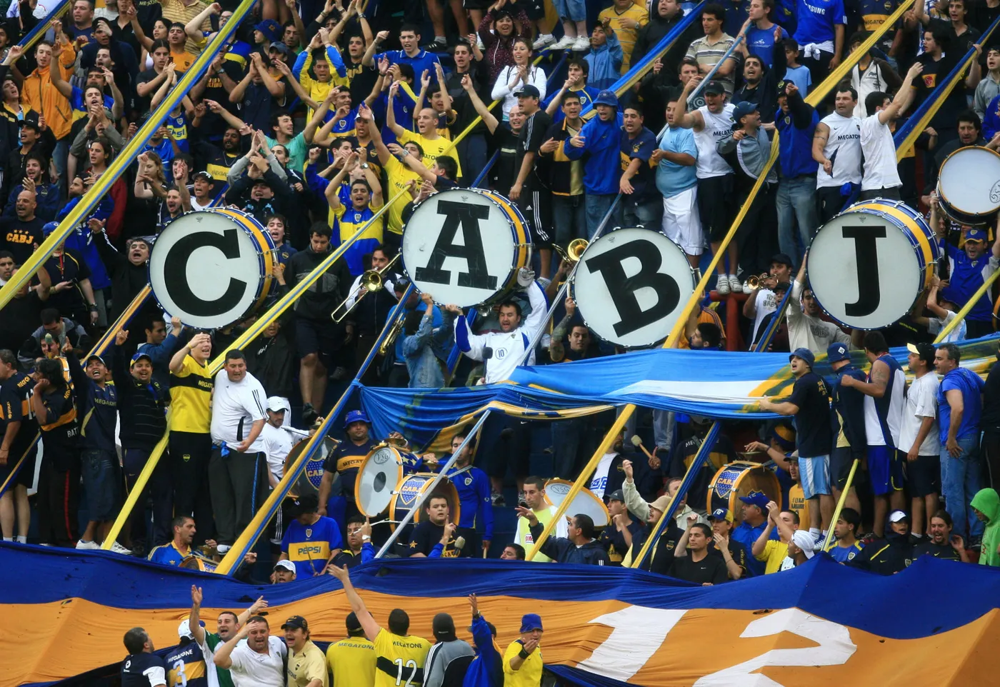

<DOCTYTE HTML>
    <html>
    <head>
        <meta charset="UTF-8">
        <link rel="stylesheet" type="text/css" href="style.css">
        <title>boca</title>
    </head>
    <body>
        <div class="cuerpo">
            <h2><p>Barra:</p></h2><br>
        </div>
        <div class="cuerpo">
            <h3>La barra brava del Boca Juniors de Argentina se llama La 12</h3>
            <h3>Fue fundada en 1969 en La Boca, Buenos Aires, por Enrique Ocampo.</h3>
        </div>
            <a href="img/barra.webp"></a>
        <div class="cuerpo">
            <a href="index.html"><h3>Volver</h3></a>
        </div>
    </body>
    </html>